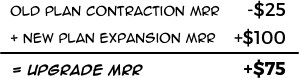

What's the Difference - Expansion and Upgrade MRR?
No, Expansion MRR is NOT Upgrade MRR and Contraction MRR is NOT Downgrade MRR.
To make it even more complicated, there's also Committed MRR and Contracted MRR and those are different things too.
What's the Difference Between Expansion and Upgrade?
When a customer moves from plan to another, there are two plans where the MRR changes:
- The old plan, which loses the customer's revenue
- The new plan, which wins the customer's revenue
The old plan suffers a Contraction - and the new plan gains an Expansion.
The sum of the Contraction and Expansion is the Upgrade… or Downgrade.

So when customer moves from plan to another there's always both Expansion and Contraction. Together they form either an Upgrade or a Downgrade.
Whether a customer movement is an Upgrade or Downgrade depends on what customer movements we want to see.
If quantities are used, the Upgrades and Downgrades are split to the plan change and volume change.
Why is this important?
A Pitfall
The terminology around MRR is not controlled by GAAP or IRFS. Other analytics apps may use the terms differently.